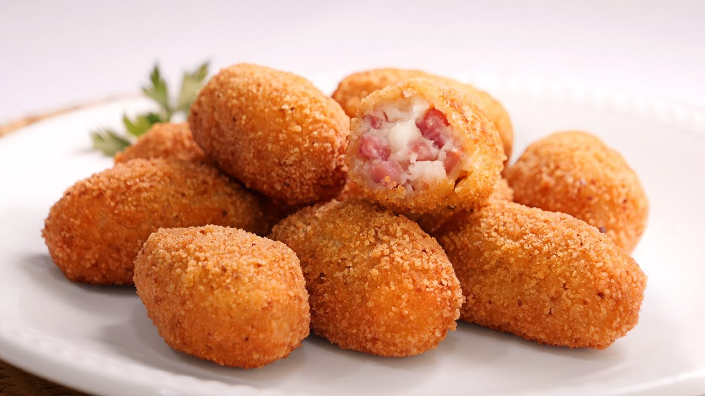

Datos sobre las croquetas
- La croqueta es un plato tan valorado, que incluso existe el Día Interacional de la Croqueta, que es el 16 de enero.
- Croqueta viene del francés "Croquette" que significa "crujiente".
- La croqueta nace de la necesidad de reciclar otros platos ya hechos y que no acabasen en la basura.
- Al principio no se usaba bechamel, sino patata para darle consistencia al relleno
- Puedes tener las croquetas congeladas sin temor a que luego tardes en cocinarlas mucho tiempo: puedes cocinarlas directamente congeladas.
- Como ya hemos dicho antes, las croquetas tienen su origen en el aprovechamiento de alimentos que nos sobraban, así que no te queden en la típica croqueta de jamón y rebusca en la nevera... atún, setas, pimientos, queso, nueces, pasas... Todo es posible cuando se trata de la croqueta y si no que se lo digan a los cocineros más famosos de la tele y sus recetas de croquetas caseras.
Origen
La croqueta no llegó a península hasta finales del siglo XIX. Este aperitivo surgió en Francia, donde un aristócrata llamado Louis de Bechamel, que era el encargado de la cocina del rey Luis XIV. El “padre” de las croquetas trabajaba como recaudador de impuestos y era superintendente de la casa del duque de Orleans. Se dice qué él o alguno de sus ayudantes, creó la besamel. Esta salsa, en realidad fue resultado del perfeccionamiento de una salsa más antigua a base de crema, por François Pierre de la Varenne cocinero del marqués de Uxelles, a la que se la dedicó, como lo hacían a menudo los cocineros para la nobleza del tiempo.

volver al inicio